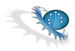

What is Komodia’s Interceptor?

Komodia’s Interceptor allows you to sniff normal and encrypted SSL traffic with a few simple clicks and a copy paste of our callback code into your application, unlike normal sniffers which shows packets, Komodia’s Interceptor works with assembled streams (if you need a solution that also modifies the traffic visit Komodia’s Redirector web page).
Product Information
For the first time on the Internet you can purchase a robust and flexible Interception SDK that allows you to develop your network interception and sniffing application, with this SDK you would be able to perform the following using a few simple clicks and easy to use API:
- Control which TCP traffic to intercept based on: applications, ports, and IPs.
- Inspect and process the incoming and outgoing traffic that is captured with the rules you have defined.
- Works with assembled streams and not with packets.
In addition the product has optional modules that allows you to:
- SSL Decoder – Decrypt SSL data from Internet explorer and Firefox and allows you to receive the decrypted data.
- HTTP Parser – Parses HTTP traffic and gives you the HTTP data parsed (removing GZIP/Deflate encodings, chunked transfers, HTTP 100 responses).
- Kernel watchdog – Protects the SDK from being removed/modified/stopped by unauthorized users. transfers, HTTP 100 responses).
With Komodia’s Interceptor SDK you can develop number of applications such as:
- Logging application: Log the network traffic streams from an application or several application.
- Outgoing traffic analyzers: Log the network traffic streams from an application or several application for analasys, e.g. web site visited, mail server used, confidential documents leaked, etc.
- Incoming traffic analyers: Log the network traffic streams that arrives to your server applications, e.g. IIS, Apache, Squid.
- SSL sniffing applications: Decrypts SSL sessions on the fly, and you receive them in plaintext, for example from online stock market websites.
There are many reasons why our clients chose Komodia’s Interceptor as their interception engine:
- Instantly develop your application, the SDK doesn’t require network or Winsock LSP programming knowledge.
- Developing a similar product with all the features takes a skilled Winsock LSP and windows programmer at least two months, don’t forget to add QA time on top of this time frame. The cost of the SDK with IE and FF SSL decryption modules is only 1200$ (view price quote).
- Saves time you would have to deal with exotic or common LSP problems – we have already done this for you. Komodia has fixed a wide array of bugs reported by our clients and our clients’ clients, thus saving your precious time from being wasted on QA. (See our bugs page)
- Tested in commercial releases. Saves you QA costs and allows you to focus on developing and testing the real functionality of your product.
- Can be used commercially. Similar “free” products come with no support and with GPL licenses, or without any API to control, which makes them commercially unusable.
- 14-day pre-purchase evaluation period, try before you buy.
- Phenomenal support, you receive either 30 or 60 days of support after purchse (depending on the product and features purchased) which includes: Counseling on the best way to ingerate our products with yours, software update, reported bugs are usualy fixed within 24-48 hours.
- Easy to interface with API, written using COM technology you can use any language to control the Interceptor.
- Most importantly: Get the Interceptor NOW and save at least four months of development and labor costs.
- The Interceptor’s main service is COM-aware, written in C++, and can be compiled with VS6 and above (needed only on the development machine).
- The TCP/IP Interceptor component is a Winsock LSP.
- The LSP is registered using our Advanced LSP installer.
- Includes two control GUI samples written in VB and MFC using the COM interfaces that the service exports.
- Works on Windows 2000 / 2003 / 2008 / XP / Vista / Windows 7 and all 64 bit flavours.
- Allows you to interface with it via either C DLL or COM DLL (for C# and .Net applications).
Manuals :
- Komodia’s Interceptor Installation manual.
- Komodia’s Interceptor Wiki page which contains FAQ and more information.
View the official quote, which includes prices for:
Komodia’s Redirector source version costs 2700$ and comes with 60 days of support.
- Long term support.
- SSL Decryption module.
- HTTP Praser module.
Contact us to receive your 14 days free trial.